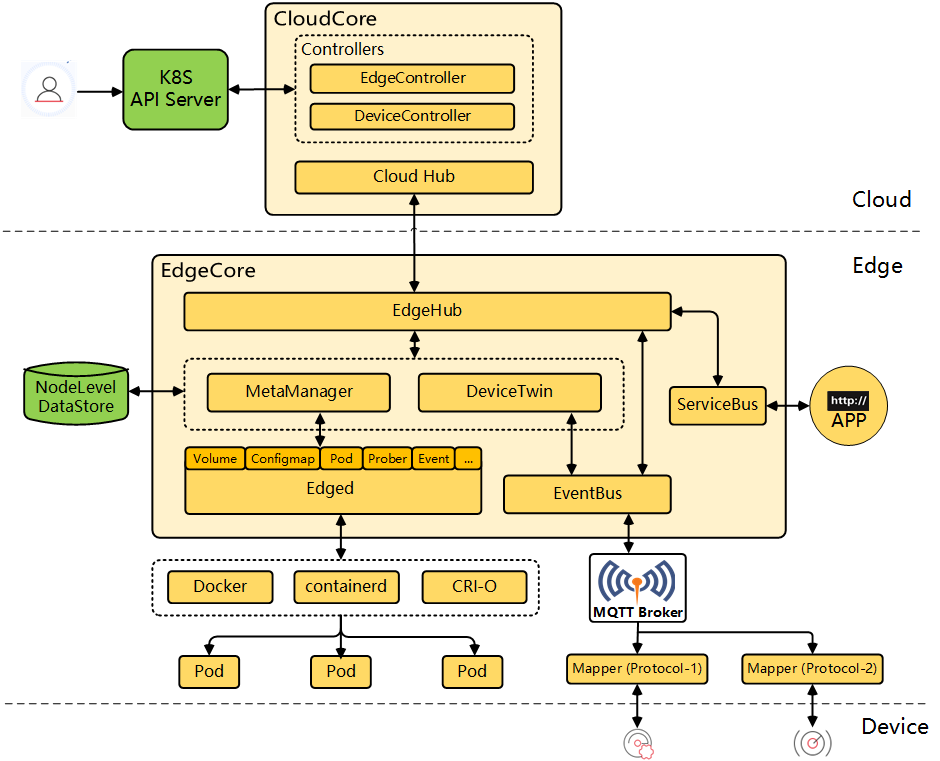
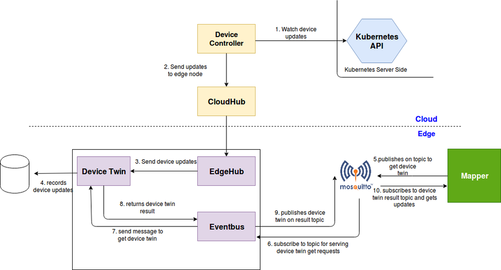
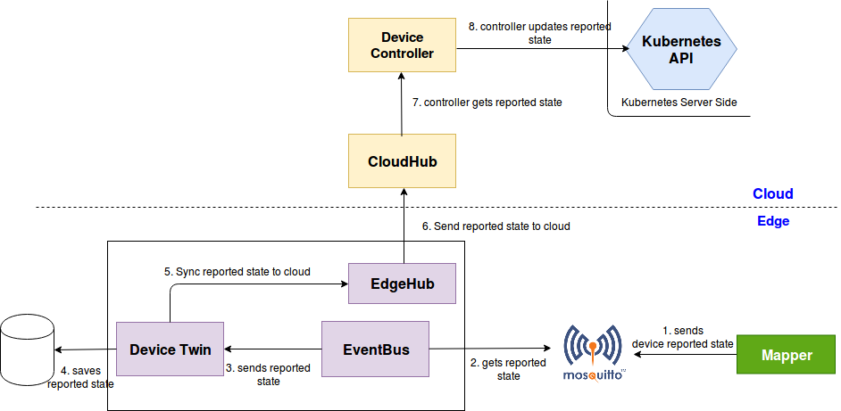
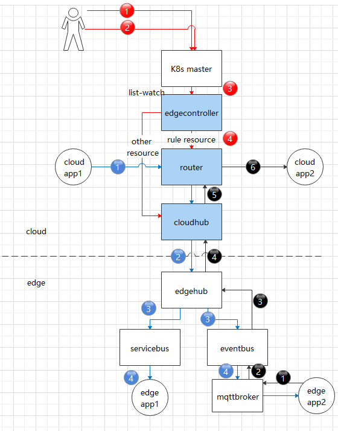

1. KubeEdge介绍
KubeEdge 是一个致力于解决边缘场景问题的开源系统，在 Kubernetes原生的容器编排和调度能力之上，实现了云边协同、计算下沉、海量边缘设备管理、边缘自治等能力。KubeEdge架构如下图所示，包括云端和边缘端两部分。

其中：
CloudHub：WebSocket服务器，负责监控云端的变化、缓存并发送消息到EdgeHub。
EdgeController：扩展的Kubernetes控制器：负责管理边缘节点和pods 的元数据，因此数据才能被发送到指定的边缘节点。
DeviceController：扩展的Kubernetes控制器，负责管理边缘设备, 实现边缘设备元数据/状态数据在云端与边缘端的同步。
EdgeHub：WebSocket客户端，负责与云边服务交互实现边缘计算。其中包括将云边资源同步更新到边缘端以及将边端主机、设备状态变化广播至云端。
Edged：负责pod生命周期的管理，可以看成一个简易版的kubelet。
EventBus：EventBus 是一个MQTT客户端负责与MQTT服务器mosquitto的交互，为其他组件提供发布与订阅功能。
ServiceBus：ServiceBus 是一个HTTP客户端与HTTP服务器使用REST进行交互，为云端组件提供HTTP客户端功能，使其请求到达运行在边缘端的HTTP服务器。
DeviceTwin：负责存储设备状态，并将设备状态同步到云端，同时也提供了了应用的查询接口。
MetaManager：MetaManager 是edged与edgehub之间的message 处理器，同时，也负责将元数据存储/查询到/从一个轻量级数据库SQLite。
基于WebSocket + 消息封装，同时优化了原生Kubernetes 中一些不必要的请求，KubeEdge实现了边缘场景下的云边可靠通信。本文从边缘设备管理和云边自定义消息传递两个方面，来解析KubeEdge的云边协同机制。
2. 边缘设备管理
2.1 DeviceModel和Device
KubeEdge通过Kubernetes的CRD，增加了DeviceModel和Device两个资源，分别来描述设备元信息和设备实例信息，DeviceController负责边缘设备管理，在云和边之间传递这些信息。用户可以通过Kubernetes API从云中创建、更新和删除设备元数据，也可以通过CRD API控制设备属性的预期(desired)状态，从云端对设备进行CRUD操作。
DeviceModel描述了设备属性，例如“温度”或“压力”,类似一个可重复使用的模板，使用它可以创建和管理许多设备。DeviceModel示例如下：
apiVersion: devices.kubeedge.io/v1alpha2
kind: DeviceModel
metadata:
name: counter-model
namespace: default
spec:
properties:
- name: status
description: counter status
type:
string:
accessMode: ReadWrite
defaultValue: ''
示例定义了一个计数器的DeviceModel，它包含一个string类型的属性‘status’。
一个Device实例代表一个实际的设备对象。它就像device model的实例化，引用了model中定义的属性。计数器的Device示例如下：
apiVersion: devices.kubeedge.io/v1alpha2
kind: Device
metadata:
name: counter
labels:
description: 'counter'
spec:
deviceModelRef:
name: counter-model
nodeSelector:
nodeSelectorTerms:
- matchExpressions:
- key: 'kubernetes.io/hostname'
operator: In
values:
- kube-edge-1
status:
twins:
- propertyName: status
desired:
metadata:
type: string
value: 'OFF'
reported:
metadata:
type: string
value: '0'
yaml中的device status包含两份数据，一个是云端希望设置的状态数据（‘desired’），一个是边缘端上报的状态数据（‘reported’）。云端的DeviceController通过Kubernetes API监听device设备的创建事件，会自动创建一个新的configmap，存储该device的status等属性信息，并保存到ectd中。EdgeController将configmap同步到边缘节点，因而边缘节点的应用也能够获取设备的属性信息。‘desired’值将初始化到边缘节点数据库以及边缘设备中，因而即使边缘节点重启，也能自动恢复到之前的状态。当然这个‘desired’值也会随着云端用户对设备的CRUD而更改。
2.2 设备信息云边同步流程
云端更新设备的操作同步到边缘端，流程如下图:

云端的DeviceController监听device设备的变更事件，并将更新的twin数据通过CloudHub发送给边缘节点。边缘节点首先将数据存储到本地数据库，再通过mqttbroker同步到边缘设备中。
边缘端设备状态信息上报到云端，流程如下图：

边缘端上报的数据首先也要存储到本地数据库，再通过EdgeHub发送给云端。
3. 云边自定义消息传递
3.1 ruleEndpoint和rule
在一些使用场景中，用户需要在云边应用之间传递一些自定义的信息。基于K8s的CRD，KubeEdge增加了ruleEndpoint和rule两个资源。ruleEndpoint定义了信息源端和目的端，rule定义了路由规则，从而实现云边应用间消息的传递。
ruleEndpoint有三种类型： rest, eventbus, servicebus。其中：
rest：仅用于表示云端的rest接口端点。既可以作为源端，发送请求到边缘节点，也可以作为目的端，接收边缘节点发来的信息。
eventbus：仅用于表示边缘节点的端点。既可以作为源端，发送数据到云端，也可以作为目的端，接收云端发来的信息。
servicebus: 仅用于表示边缘节点的rest接口端点。可作为目的端，接收云端发来的信息。
rule描述了信息是如何从源端发送到目的端的，目前有三条路径，如下图所示，其中：
rest -> enventbus: 用户在云端通过rest接口，发送信息到边缘端的mqttbroker。
eventbus -> rest: 用户在边缘端通过mqttbroker发送信息，最终信息发送到云端的rest接口。
rest -> servicebus: 用户在云端通过rest接口，发送信息到边缘端的rest接口。

3.2 如何传递自定义消息
首先，通过修改cloudcore的配置文件cloudcore.yaml，在路由器模块中加”enable:true”，表示启动路由器模块，然后重启cloudcore。
下面分别演示rule定义的三条消息传递路径的使用方式。
3.2.1 云端通过rest接口发送信息到边缘端mqttbroker
首先需要创建rest和eventbus类型的ruleEndpoint。执行命令：
kubectl create -f ruleEndpoint-rest.yaml
kubectl create -f ruleEndpoint-eventbus.yaml
ruleEndpoint-rest.yaml 的内容如下：
apiVersion: rules.kubeedge.io/v1
kind: RuleEndpoint
metadata:
name: my-rest
labels:
description: cloud-endpoint
spec:
ruleEndpointType: "rest"
properties: {}
ruleEndpoint-eventbus.yaml 的内容如下：
apiVersion: rules.kubeedge.io/v1
kind: RuleEndpoint
metadata:
name: my-eventbus
labels:
description: edge-endpoint
spec:
ruleEndpointType: "eventbus"
properties: {}
然后创建规则，执行命令：
kubectl create -f rule-rest-eventbus.yaml
rule-rest-eventbus.yaml 的内容如下：
apiVersion: rules.kubeedge.io/v1
kind: Rule
metadata:
name: my-rule
labels:
description: cloud-rest-edge-eventbus
spec:
source: "my-rest"
sourceResource: {"path":"/a"}
target: "my-eventbus"
targetResource: {"topic":"test"}
在云端调用rest接口向边缘端发送信息，rest接口定义：
方法：POST
URL: http://{rest_endpoint}/{node_name}/{namespace}/{path}, {rest_endpoint} 是 {cloudcore_ip}:9443, {node_name} 是 edgenode 的名字, {namespace} 是规则的命名空间, { path} 的前缀是 source ruleEndpoint 的sourceResource。
Body: {user_message}, {user_message} 是用户的消息,
例如：
curl -X POST -d'{"message": "123"}' http://localhost:9443/kube-edge-1/default/a
边缘端应用订阅mqttbroker的topic，执行命令
mosquitto_sub -t 'test' -d
即可接收云端消息：{“message”：“123”}
3.2.2 边缘端通过mqttbroker到云端rest接口
创建rest和eventbus类型ruleEndpoint，执行命令
kubectl create -f ruleEndpoint-rest.yaml
kubectl create -f ruleEndpoint-eventbus.yaml
ruleEndpoint-rest.yaml 的内容如下：
apiVersion: rules.kubeedge.io/v1
kind: RuleEndpoint
metadata:
name: my-rest
labels:
description: cloud-endpoint
spec:
ruleEndpointType: "rest"
properties: {}
ruleEndpoint-eventbus.yaml 的内容如下：
apiVersion: rules.kubeedge.io/v1
kind: RuleEndpoint
metadata:
name: my-eventbus
labels:
description: edge-endpoint
spec:
ruleEndpointType: "eventbus"
properties: {}
创建规则，执行命令：
kubectl create -f rule-eventbus-rest.yaml
rule-eventbus-rest.yaml 的内容如下：
apiVersion: rules.kubeedge.io/v1
kind: Rule
metadata:
name: my-rule-eventbus-rest
labels:
description: edge-eventbus-cloud-rest
spec:
source: "my-eventbus"
sourceResource: {"topic": "test","node_name": "k8s-edge-1"}
target: "my-rest"
targetResource: {"resource":"http://k8s-master:8080/b"}
边缘端的应用可发布信息到topic，消息将传递到云端应用的rest接口地址。
使用 mosquitto 发布数据，执行命令：
mosquitto_pub -t 'default/test' -d -m '{"edgemsg":"msgtocloud"}'
云端应用的rest接口定义：
方法：POST
URL：目标ruleEndpoint 的 targetResource。
正文：{user_api_body}
一个简单的用go写的httpserver如下，实现了该rest接口：
package main
import (
"fmt"
"io/ioutil"
"log"
"net/http"
)
func sayReceived(w http.ResponseWriter, r *http.Request) {
r.ParseForm() // 解析参数
bytes, err := ioutil.ReadAll(r.Body)
if err != nil {
log.Fatal(err)
}
r.Body.Close()
fmt.Println(string(bytes));
fmt.Fprintf(w, "云端收到！")
}
func main() {
http.HandleFunc("/b", sayReceived)
err := http.ListenAndServe(":8080", nil)
if err != nil {
log.Fatal("ListenAndServe: ", err)
}
}
云端运行httpserver应用后，在边缘端发送信息，即可在云端收到。
3.2.3 云端rest接口到边缘端rest接口
创建rest 和 servicebus 类型的 ruleEndpoint。执行命令：
kubectl create -f ruleEndpoint-rest.yaml
kubectl create -f ruleEndpoint-servicebus.yaml
ruleEndpoint-rest.yaml 的内容如下：
apiVersion: rules.kubeedge.io/v1
kind: RuleEndpoint
metadata:
name: my-rest
labels:
description: cloud-endpoint
spec:
ruleEndpointType: "rest"
properties: {}
ruleEndpoint-servicebus.yaml 的内容如下：
apiVersion: rules.kubeedge.io/v1
kind: RuleEndpoint
metadata:
name: my-servicebus
labels:
description: edge-endpoint
spec:
ruleEndpointType: "servicebus"
properties: {"service_port":"6666"}
创建规则。执行命令：
kubectl create -f rule-rest-servicebus.yaml
rule-rest-servicebus.yaml 的内容如下：
apiVersion: rules.kubeedge.io/v1
kind: Rule
metadata:
name: my-rule-rest-servicebus
labels:
description: cloud-rest-end-servicebus
spec:
source: "my-rest"
sourceResource: {"path":"/source"}
target: "my-servicebus"
targetResource: {"path":"/target"}
可以在云端调用rest 接口向边缘节点上的servicebus发送消息。
方法：POST/GET/DELETE/PUT
URL：http://{rest_endpoint}/{node_name}/{namespace}/{path}，{rest_endpoint} 是 {cloudcore_ip}:9443，{node_name} 是 edgenode 的名称，{namespace} 是规则的命名空间。{path} 是 source ruleEndpoint 的 sourceResource。
Body: {user_message}, {user_message} 是用户的消息。
最后，kubeedge 的 servicebus 会调用边缘节点上应用的接口’targetResource’，用户的应用程序在边缘节点即可获得api 的请求。
4. 总结
本文从边缘设备管理和云边自定义消息传递两个方面，介绍了KubeEdge的云边协同机制，可根据实际场景选择使用。另外就是受篇幅所限，本文并未介绍KubeEdge边缘端之间的通信框架EdgeMesh，这个将在后续文章中介绍。
参考资料